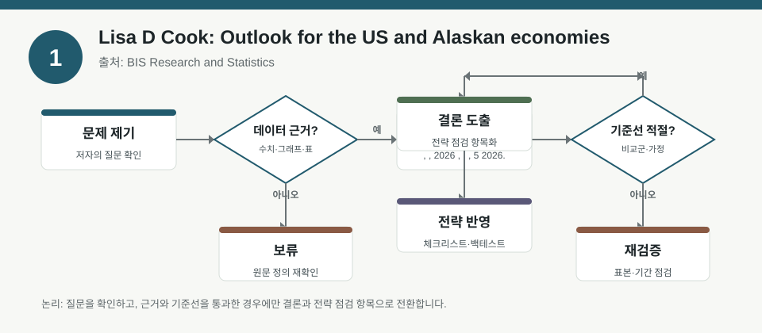
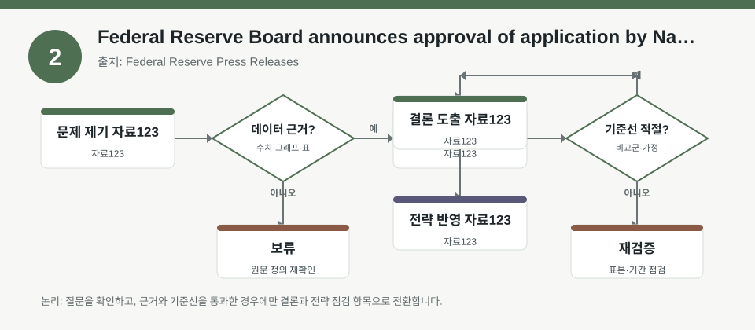
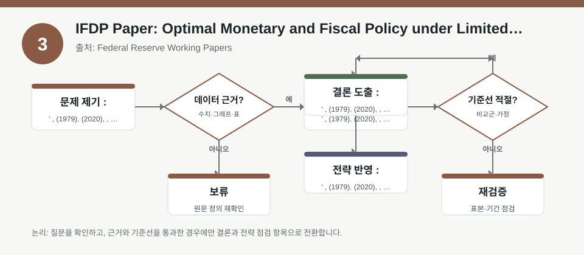

핵심 요약
- 결론: 이번 자료들은 미국 통화정책·금융규제·재정정책의 연결고리를 보여주며, 한국 투자자는 KOSPI/KOSDAQ 업종 민감도와 금리·환율·신용 리스크 점검 프레임으로 읽는 것이 핵심입니다.
- 원칙: 수치가 메타데이터에 없으면 사실로 단정하지 말고, 반드시 원문에서 교차검증할 항목으로 분리해 해석해야 합니다.
주목할 자료
| 번호 | 자료 | 출처 | 원문 | 핵심 내용 | 데이터 포인트 | 리스크/한계 |
|---|---|---|---|---|---|---|
| 1 | Outlook for the US and Alaskan economies | BIS Research and Statistics | 원문 보기 | Fed 이사의 미국·알래스카 경제 전망 연설로, 성장·고용·물가·지역경제 흐름을 함께 읽을 수 있는 자료입니다. | 금리 경로, 인플레이션 둔화 속도, 지역 경기 차이, 달러·원화 민감도 확인 필요 | 연설문 성격이라 전망과 해석이 중심이며, 정량 전망치는 원문에서 확인해야 합니다. |
| 2 | Federal Reserve Board announces approval of application by National Westminster Bank Plc | Federal Reserve Press Releases | 원문 보기 | Fed의 외국은행 신청 승인 공지로, 글로벌 은행 규제와 미국 내 지점·영업 구조를 점검하는 데 유용합니다. | 규제 승인, 외국계 은행의 미국 내 운영 범위, 금융권 규제·신용 스프레드 영향 확인 필요 | 개별 은행 이벤트라 시장 전체 신호로 일반화하기 어렵고, 한국 금융주에의 파급은 간접적입니다. |
| 3 | IFDP Paper: Optimal Monetary and Fiscal Policy under Limited Foresight | Federal Reserve Working Papers | 원문 보기 | 제한된 예측력 하에서 통화·재정정책의 최적 설계를 다루는 이론 논문으로, 정책 기대와 부채 인식의 왜곡을 분석합니다. | 정부지출 충격, 세금 경로, 부채-자산 인식, 기대 형성 가정, 모형 민감도 확인 필요 | 모형 의존도가 높아 실증 백테스트와 바로 연결하기 어렵고, 가정 변경에 따라 결론이 달라질 수 있습니다. |
자료별 상세
1. Outlook for the US and Alaskan economies

- 핵심: 미국 경기와 지역경제를 함께 보며, 한국 투자자는 글로벌 수요·달러 강세·금리 기대가 KOSPI 수출주와 KOSDAQ 성장주의 상대 민감도를 어떻게 바꾸는지 점검할 수 있습니다.
- 데이터 포인트: 연설문에서 언급된 성장, 고용, 물가, 에너지·지역경기 관련 서술을 원문 기준으로 확인해야 합니다.
- 리스크: 정량 전망치가 메타데이터에 없으므로, 실제 수치와 표현 강도는 원문 검증이 필요합니다.
- 투자전략 반영 예시: KOSPI 업종별로 반도체·자동차·정유처럼 달러와 수요 민감 업종, KOSDAQ의 고밸류 성장주처럼 금리 민감 업종을 구분해 체크리스트를 만들 수 있습니다.
- 실행 예시: 다음 분기 점검표에 미국 물가, 실업률, 달러지수, 미 국채금리, 원/달러 환율을 넣고 업종별 민감도를 기록해 두는 방식으로 백테스트 변수를 정리할 수 있습니다.
2. Federal Reserve Board announces approval of application by National Westminster Bank Plc

- 핵심: 외국은행의 미국 내 영업 승인 사례는 규제 절차와 감독 기준이 어떻게 작동하는지 보여주며, 한국 투자자는 금융주와 크레딧 환경의 연결성을 확인할 수 있습니다.
- 데이터 포인트: 승인 대상, 영업 범위, 규제 조건, 지점 구조 같은 세부 조건을 원문에서 확인해야 합니다.
- 리스크: 개별 인허가 사례라서 미국 금융정책 전반이나 한국 금융시장에 직접적인 방향성을 주는 자료는 아닙니다.
- 투자전략 반영 예시: 한국 금융주를 볼 때는 해외 규제 뉴스가 외화 조달, 크로스보더 익스포저, 금융권 리스크 프리미엄에 어떤 영향을 줄지 체크리스트에 반영할 수 있습니다.
- 실행 예시: 보유 금융주 점검표에 해외사업 비중, 외화차입 비중, 규제 민감도, CDS나 스프레드 관련 지표를 추가해 이벤트 전후 변화를 기록하는 방식이 적절합니다.
3. IFDP Paper: Optimal Monetary and Fiscal Policy under Limited Foresight

- 핵심: 기대 형성이 제한된 환경에서는 정책 전달효과가 왜곡될 수 있어, 한국 투자자는 금리·재정 기대가 채권금리와 성장주 밸류에이션에 미치는 경로를 분리해서 봐야 합니다.
- 데이터 포인트: 정부지출 충격, 노동세 경로, 부채를 자산처럼 인식하는 가정, 행태적 할인 여부 같은 모형 요소를 확인해야 합니다.
- 리스크: 이론모형 중심이라 실증 데이터 없이 결과를 일반화하기 어렵고, 가정이 바뀌면 최적 정책 결론도 달라질 수 있습니다.
- 투자전략 반영 예시: KOSDAQ 성장주, 고배당주, 금리민감 업종을 구분해 정책 기대 변화가 밸류에이션과 업종 로테이션에 미치는 경로를 점검하는 체크리스트로 활용할 수 있습니다.
- 실행 예시: 백테스트 설계 시 금리 인하 기대, 재정지출 확대 기대, 인플레이션 서프라이즈를 각각 별도 팩터로 넣고, 단일 시그널이 아닌 조합 신호로 성과를 검증하는 방식이 유용합니다.
팩터·리스크·포트폴리오 관점
- 핵심: 세 자료를 합치면 성장·물가·정책기대·규제라는 네 축이 KOSPI/KOSDAQ의 섹터 익스포저, FX 민감도, 금리 듀레이션, 크레딧 리스크를 함께 흔들 수 있다는 점이 드러납니다.
- 검수: 연설·공지·이론논문은 모두 맥락이 다르므로, 실제 포트폴리오 판단 전에 수치, 기간, 가정, 지역 적용 가능성을 각각 분리 검증해야 합니다.
정리
- 결론: 이번 자료는 방향성 예측보다도 팩터 노출과 가정 검증이 더 중요하다는 점을 보여줍니다.
- 다음 확인: 원문에서 성장·물가·금리·규제 조건을 확인한 뒤, 한국 포트폴리오의 업종별 민감도와 백테스트 가정표에 반영해야 합니다.